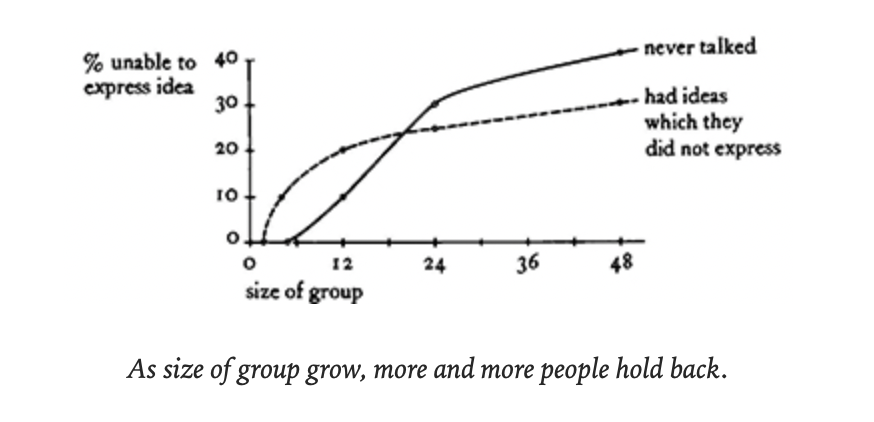
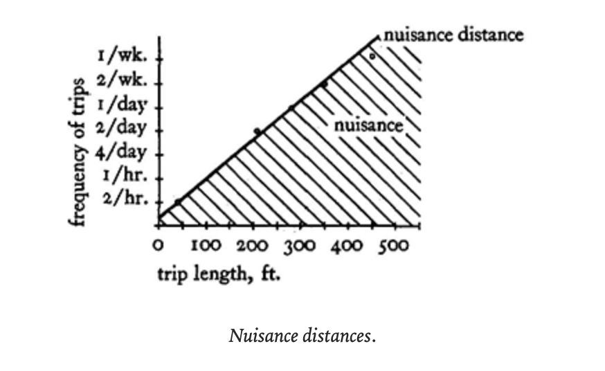

“every individual in such a society will have a unique language, shared in part, but which as a totality is unique to the mind of the person who has it. In this sense, in a healthy society there will be as many pattern languages as there are people—even though these languages are shared and similar.”
Contains hundreds of patterns aimed at encapsulating a community-centric, bottom-up philosophy of urban planning, architecture, and collective livability
Pattern
[a] pattern describes a problem which occurs over and over again in our environment, and then describes the core of the solution to that problem, in such a way that you can use this solution a million times over, without ever doing it the same way twice
Pattern languages are composable, structured without being prescriptive, and for the purpose of practical design. Each pattern is connected to certain “larger” patterns which come above it in the language; and to certain “smaller” patterns which come below it in the language. The pattern helps to complete those larger patterns which are “above” it, and is itself completed by those smaller patterns which are “below” it.”
See a list of my own personal patterns
Notes
Individuality
- “Although a person may have a different mixture of attributes from his neighbour, he is not truly different, until he has a strong center, until his uniqueness is integrated and forceful.” (p.45, Mosaic of Subcultures)
- Small social communities
- “It seems clear, then, that variety, character, and finding your own self, are closely interwoven. In a society where a man can find his own self, there will be ample variety of character, and character will be strong. In a society where people have trouble finding their own selves, people will seem homogenous , there will be less variety, and character will be weak” (p.46, Mosaic of Subcultures)
- “If, every day you do something, you meet someone with a slightly different background, and each of these peoples’ response to what you do is different even when your actions are the same, the situation becomes more and more confusing. The possibility that you can become secure and strong in yourself, certain of what you are, and certain of what you are doing, goes down radically. Faced constantly with an unpredictable social world, people no longer generate the strength to draw on themselves; they draw more and more on the approval of others; they look to see whether people are smiling when they say something, and if they are, they go on saying it, and if not, they shut up. In a world like that, it is very hard for anyone to establish any sort of inner strength.” (p.46, Mosaic of Subcultures)
- “A person will only be able to able find his own self, and therefore to develop a strong character, if he is in a situation where he receives support for his idiosyncrasies from the people and values which surround him” (p.48, Mosaic of Subcultures)
- “In nature, the differentiation of a species in to subspecies is largely due to the process of geographic speciation, the genetic changes which take place during a period of spatial isolation… members of the same species develop distinguishable traits when separated from other members of the species…” (p.78, Subculture Boundary)
- Hierarchies of details (see also: information scales): “Our own bodies and the natural surroundings in which we evolved contain a continuous hierarchy of details, ranging all the way from the molecular fine structure to gross features like arms and legs and trunks and branches. We know from results in cognitive psychology that any one step in this hierarchy can be no more than 1:5, 1:7, or 1:10 if we are to perceive it as a natural hierarchy. We cannot understand a hierarchy in which there is a jump in scale of 1:20 or more.” (p.1114, Half-inch trim)
- “People are different sizes; they sit in different ways. And yet there is a tendency in modern times to make all chairs alike” (p.1158, Different Chairs)
Community size
- “Paul Goodman has proposed a rule of thumb, based on cities like Athens in their prime, that no citizen be more than two friends away from the highest member of the local unit. Assume that everyone knows about 12 people in his local community. Using this notion and Goodman’s rule, we can see that an optimum size for a political community would be about or 1728 households of 5500 persons.” (p.72, Community of 7000)
- Regression to the mean in large communities
- Margaret Mead: “There is a tendency to reduce all values to simple scales of dollars, school grades, or some other simple quantifiable measure, whereby the extreme incommensurables of many different sets of cultural values can be easily, though superficially, reconciled” (p.47, Mosaic of Subcultures)
- Bernard Bass has conducted an experiment relating group size to participation (p.713, Small Meeting Rooms): 
Making a place feel like home
- Traffic (p.83, Identifiable Neighbourhood)
- Light traffic (2000 vehicles/day, 200 vehicles/peak hour, 15-20mph)
- “I feel it’s home. There are warm people on this street. I don’t feel alone.”
- “Definitely a friendly street.”
- “I feel my home extends to the whole block”
- Moderate traffic (6000 vehicles/day, 550 vehicles/peak hour, 25mph)
- “You see the neighbours but they aren’t close friends”
- “Don’t feel there is any community any more, but people say hello”
- Heavy traffic (16,000 vehicles/day, 1900 vehicles/peak hour, 35-40mph)
- “It’s not a friendly street — no one offers help.”
- “People are afraid to go into the street because of the traffic”
- “It is impersonal and public”
- Light traffic (2000 vehicles/day, 200 vehicles/peak hour, 15-20mph)
- No high-rises
- “High-rise living takes people away from the ground, and away from the casual, everyday society that occurs in the sidewalks and streets and on the gardens and porches. It leaves them alone in their apartments. The decision to go out for some public life becomes formal and awkward; and unless there is some specific talks which brings people out in the world, the tendency is to stay home, alone.” (p. 116, Four-story limit)
- “A building will also seem alien unless it gives to its users a direct and intuitive sense of its structure — how it is put together. Buildings where the structure is hidden leave yet another gap in people’s understanding of the environment around them. We know this is important to children and suspect it must be important to adults too.” (p.944, Structure Follows Social Spaces)
Transit

- “The graph is based on 127 observations in the Berkeley City Hall. People were asked to define all the trips they had to make regularly during the work week, to state their frequency, and then to state whether they considered the trip to be a nuisance.” (p.409, Office connections)
Public Gathering Spaces
- “People with a shared way of life gather together to rub shoulders and confirm their community” (p.169, Promenade)
- “Men seek corner beer shops, where they spend hours talking and drinking; teenagers, especially boys, choose special corners too, where they hang around, waiting for their friends. Old people like a special spot to go to, where they can expect to find others; small children need sand lots, mud, plants, and water to play with in the open; young mothers who go to watch their children often use the children’s play as an opportunity to meet and talk with other mothers. Because of the diverse and causal nature of these activities, they require a space which has a subtle balance of being defined and yet not too defined, so that any activity which is natural to the neighbourhood at any given time can develop freely and yet has something to start from” (p.349, Public Outdoor Room)
Gateways and Gradients
- “If access is restricted, this means, by definition, that those few points where access is possible, will come to have special importance.” (p.89, Neighborhood Boundary)
- “Buildings, and especially houses, with a graceful transition between the street and the inside, are more tranquil than those which open directly off the street” (p.549, Entrance Transition)
- “In one exhibit people had to cross a huge, deep-pile, bright orange carpet on the way in. In this case, though the exhibit was no better than other exhibits, people stayed. The authors concluded that people were, in general, under the influence of their own ‘street and crowd behaviour,’ and that while under this influence could not relax enough to make contact with the exhibits. But the bright carpet presented t hem with such a strong contract as they walked in, that it broke the effect of their outside behaviour, in effect ‘wiped them clean,’ with the result that they could then get absorbed in the exhibit” (p.550, Entrance Transition)
- “Lay out the spaces of a building so that they create a sequence which begins with the entrance and the most public parts of the building, then leads into the slightly more private areas, and finally to the most private domains” (p.613, Intimacy Gradient)
Conviviality
See also: Tools for Conviviality
- Education
- “People of all walks of life come forth, and offer a class in the things they know and love: professions and workgroups offer apprenticeships in their offices and workshops, old people offer to teach whatever their life work and interest has been, specialists offer tutoring in their special subjects. Living and learning are the same” (pp. 101-102, Network of Learning)
- “The original universities in the middle ages were simple collections of teachers who attracted students because they had something to offer. They were marketplaces of ideas, located all over the town, where people could shop around for the kinds of ideas and learning which made sense to them. By contrast, the isolated and over-administered university of today kills the variety and intensity of the different ideas at the university and also limits the student’s opportunity to shop for ideas… the social and physical environment must provide a setting which encourages rather than discourages individuality and freedom of thought… the environment must provide a setting which encourages the student to see for himself which ideas make sense — a setting which gives him the maximum opportunity and exposure to a great variety of ideas, so that he can make up his mind for himself.” (p.232, University as a Marketplace)
- Healthcare
- “Hospitals put the emphasis on sickness. They are enormously expensive; they are inconvenient because they are too centralized; and they tend to create sickness, rather than cure it, because doctors get paid when people are sick.” (p.252, Health Center)
- “The Peckham Center was a club, run by two doctors, focused on a swimming pool, a dance floor, and a cafe. In addition, there were doctors’ offices, and it was understood that families — never individuals — would receive periodic check-ups as part of their activities around the swimming and dancing. Under these conditions, people used the center regularly, during the day and at night. The question of their health became fused with the ordinary life of the community, and this set the stage for a most extraordinary kind of health care” (p.254, Health Center)
Maintenance and ownership
- “Processes of maintenance and repair hinge on the fact of user ownership. In other words, the places where people are user-owners are kept up nicely; the places where they are not, tend to run down. When people have their own homes … they extend themselves to make it personal and personal and comfortable.” (p.257, Housing in Between)
- “People cannot be genuinely comfortable and healthy in a house which is not theirs. All forms of rental — whether from private landlords or public housing agencies — work against the natural processes which allow people to form stable, self-healing communities.” (p.393, Your own home)
- “Rental areas are always the first to turn to slums. The mechanism is clear and well known. See, for example, George Sternlieb, The Tenement Landlord (Rutgers University Press, 1966). The landlord tries to keep his maintenance and repair costs as low as possible; the residents have no incentive to maintain and repair the homes — in fact, the opposite — since improvements add to the wealth of the landlord, and even justify higher rent. And so the typical piece of rental property degenerates over the years. The landlords try to build new rental properties which are immune to neglect — gardens are replaced with concrete, carpets are replaced with lineoleum, and wooden surfaces by formica: it is an attempt to make the new units maintenance-free, and to stop the slums by force; but they turn out cold and sterile and again turn into slums because nobody loves them.” (p.394, Your own home)
- “Though renting in general has a devastating impact on the environment, our experience has been that face-to-face rental, with the owners occupying the main structure, is the one kind of rental relationship that is reasonably healthy. The landlord is actually there, so he is directly concerned with the well-being of the life around him and with the environment” (p.721, Rooms to Rent)
- “We must treat every new act of building as an opportunity to mend some rent in the existing cloth; each act of building gives us the chance to make one of the ugliest and least healthy parts of the environment more healthy.” (p.510, Site Repair)
- “It is desirable to build a building in such a way that it starts out loose and flimsy while final adaptations in plan are made, and then gets stiffened gradually during the process of construction, so that each additional act of construction makes the structure sounder.” (p.963, Gradual Stiffening)
The family and coliving
- “It seems very likely that the nuclear family is not a viable social form. It is too small. Each person in a nuclear family is too tightly linked to other members of the family; any one relationship which goes sour, even for a few hours, becomes critical; people cannot simply turn away toward uncles, aunts, grandchildren, cousins, brothers.” (p.377, The Family)
- “It is our experience that groups have not taken this need for privacy seriously enough. It has been shrugged off, as something to overcome. But it is a deep and basic need; and if the setting odes not let each person and each small household regulate itself on this dimension, it is sure to cause trouble.” (p.379, The Family)
- “In a small household shared by two, the most important problem which arises is the possibility that each may have too little opportunity for solitude or privacy… It is true that each partner is trying to maintain an individuality, and not be submerged in the identity of the other, or the identity of the ‘couple’. Each partner needs space to nourish this need.” (p.386, House for a Couple)
- “There is a critical point beyond which closer contact with another person will no longer lead to an increase in empathy. (A) Up to a certain point, intimate interaction with others increases the capacity to empathize with them. But when others are too constantly present, the organism appears to develop a protective resistance to responding to them… (B) Families who provide time and space for privacy, and who teach children the utility and satisfaction of withdrawing for private reveries, will show higher average empathic capacity than those who do not.” (p.669, A Room of One’s Own)
Work
See also: Buddhist Economics
- “The two main elements of job dissatisfaction as the diminishing independence of workers, and the increasing simplification, fragmentation, and isolation of tasks — both of which are rampant in modern industrial and office work alike.” (p.401, Self-governing Workshops and Offices)
- “First of all, what do we mean by ‘settled work’? It is the work which unites all the threads of a person’s life into one activity: the activity becomes a complete and wholehearted extension of the person behind it. It is a kind of work that on cannot come to overnight; but only by gradual development. And it is a kind of work that is so thoroughly a part of one’s way of life that it most naturally occurs within or very near the home: when it is free to develop, the workplace and the home gradually fuse and become one thing.” (p.734, Settled Work) see also: iconic space
Physical Spaces
- Sun and light
- “People use open space if it is sunny, and do no use it if it isn’t… Always place buildings to the north of the outdoor spaces that go with them, and keep the outdoor spaces to the south. Never leave a deep band of shade between the building and the sunny part of the outdoors” (p.516, South Facing Outdoors)
- “Place the most important rooms along the south edge of the building, and spread the building out along the east-west axis.” (p.617, Indoor Sunlight)
- “People are by nature phototropic — they move toward light, and, when stationary, they orient themselves toward the light. As a result the much loved and much used places in buildings, where the most things happen, are places like window seats, verandas, fireside corners, trellised arbors; all of them defined by non-uniformities in light, and all of them allowing the people who are in them to orient themselves toward the light.” (p.645, Tapestry of Light and Dark)
- “Rooms lit on two sides, with natural light, create less glare around people and objects; this lets us see things more intricately; and most important, it allows us to read in detail the minute expressions that flash across people’s faces, the motion of their hands … and thereby understand, more clearly, the meaning they are after. The light on two sides allows people to understand each other.” (p.748, Light on Two Sides of Every Room)
- “The primary function of windows is not to provide light but to provide a link to the outside and, furthermore that this link is most meaningful when it contains a view of the ground and the horizon.” (p.1051, Low Sill)
- Instead of designing buildings that create negative, shapeless space, we should create buildings that create positive, shapeful space. “Another way of defining the difference between ‘positive’ and ‘negative’ outdoor spaces is by their degree of enclosure and their degree of convexity” (p.519, Positive Outdoor Space). Convex spaces are positive and non-convex spaces are negative
- The fire: “It leads to a very special kind of attention which has nothing in common with the attention involved in watching or observing. Very rarely is it utilized for any other kind of contemplation. When near the fire, one must be seated; one must rest without sleeping; one must engage in reverie on a specific object…” (p.839, The Fire)
- Sound
- “Sound is an important cue in the perception of distance between people (voice, footstep, rustle, and so on), this means that the ceiling height will alter the apparent distance between people. Under a high ceiling people seem further apart than they actually are.” (p.878, Ceiling Height Variety)